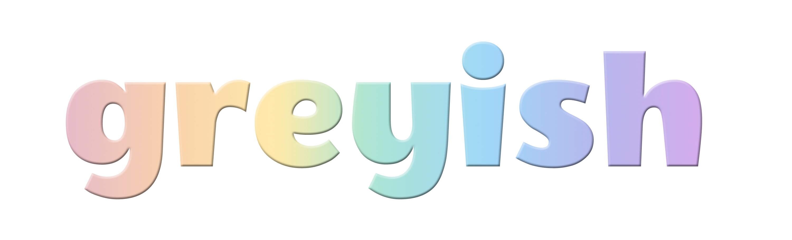

permission pressure | presence productivity | connection correction
rest-forward tech centering unmet needs of the chronically invisible;
unwell, alter-abled, neurodivergent, elder-folk –
and all the greyish middles we so often overlook.